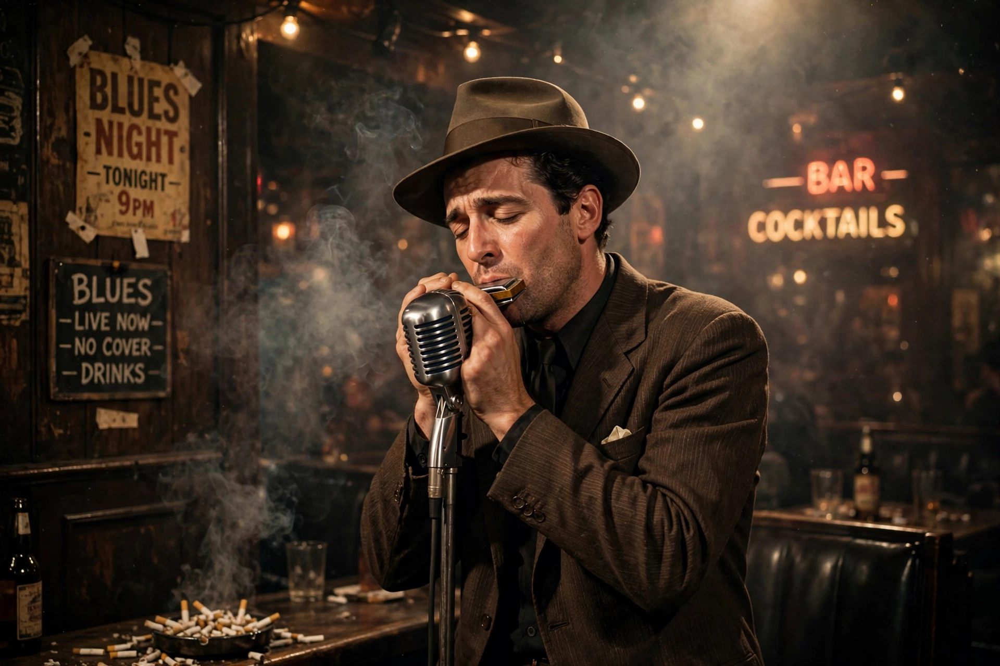

| Little Walter | |
|---|---|
| Birth name | Marion Walter Jacobs |
| Born | May 1, 1930, Marksville, Louisiana, U.S. |
| Died | February 15, 1968 (aged 37), Chicago, Illinois, U.S. |
| Genres | Chicago blues, rhythm and blues |
| Instruments | Harmonica, vocals, guitar |
| Labels | Chess, Checker |
| Associated acts | Muddy Waters |

Marion Walter Jacobs (May 1, 1930 – February 15, 1968), known as Little Walter, was an American blues musician, singer, and songwriter, whose revolutionary approach to the harmonica had a strong impact on succeeding generations, earning him comparisons to such seminal artists as Django Reinhardt, Charlie Parker and Jimi Hendrix. His virtuosity and musical innovations fundamentally altered many listeners' expectations of what was possible on blues harmonica.
Born in Marksville, Louisiana, Jacobs left home by his early teens, busking on the streets of New Orleans, Memphis, St. Louis and Chicago. He arrived in Chicago in the mid-1940s and was playing in Maxwell Street market when he made his first recordings in 1947. In 1948 he joined Muddy Waters's band, becoming the defining harmonica voice of the classic Chicago blues sound.
Little Walter pioneered the technique of playing the harmonica through a small microphone held in the hands and plugged into a guitar amplifier, exploiting distortion and feedback to create a horn-like, saxophone-influenced tone. His instrumental "Juke", recorded in 1952 at the end of a Muddy Waters session, became a number-one R&B hit on the Checker label and launched his solo career. Further hits included "Mean Old World", "Blues with a Feeling", "My Babe" (1955, his biggest hit), "Key to the Highway" and "Everything Gonna Be Alright".
Jacobs's career declined in the 1960s amid alcoholism and the after-effects of street fights. He died in Chicago on February 15, 1968, of coronary thrombosis following injuries sustained in a fight, aged 37. He was inducted into the Blues Hall of Fame in 1980 and, in 2008, into the Rock and Roll Hall of Fame — the only performer inducted specifically for harmonica playing. "My Babe" and "Juke" have been recognised by the Grammy Hall of Fame.